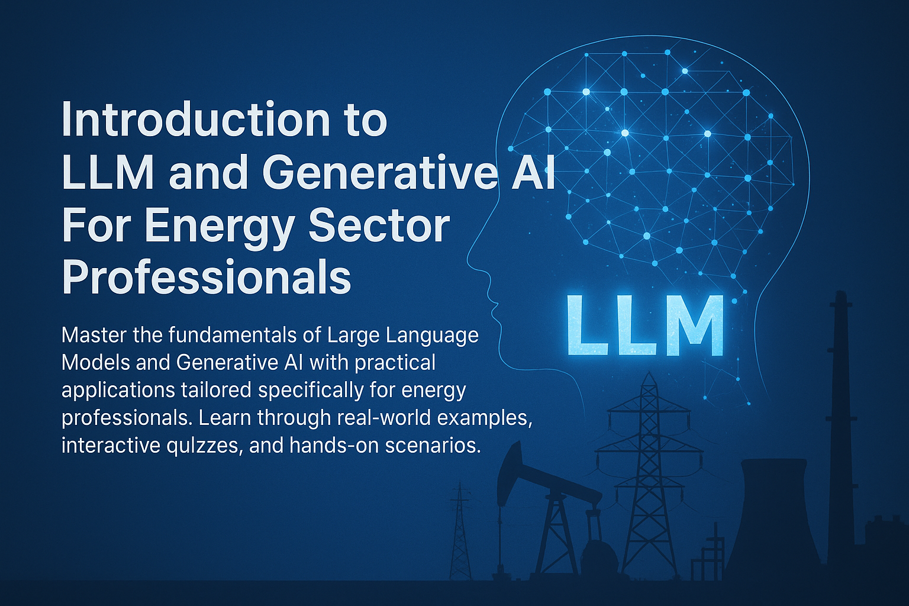

AI, Machine Learning, and Generative AI: Interactive Learning
Experience
📍 Your Learning Progress
Step 1: Course Introduction & Learning Objectives
1
🎯 Welcome & Learning Objectives
💡 Learning Objectives
By the end of this module, you'll understand the fundamental
differences between AI, ML, and Generative AI, and recognize how
these technologies are already being used in energy sector
applications.
Welcome to this comprehensive course! Over the next 42 minutes,
we'll demystify some of the most transformative technologies in
today's energy sector: Artificial Intelligence, Machine Learning,
and Generative AI.
You'll learn not just what these technologies are,
but how they're already revolutionizing energy
operations and how you can leverage them in your
daily work.

🚀 Your journey into AI for energy professionals starts here!
This interactive course will transform how you think about and
use AI technologies.
🔍 What Makes This Training Different?
Interactive Learning: Content is revealed
step-by-step, preventing information overload. Each concept builds
naturally on the previous one, with immediate feedback and visual
reinforcement to ensure solid understanding before moving forward.
2
🤖 Artificial Intelligence - The Foundation
What is AI? AI is the broad field of making
computers capable of performing tasks that typically require human
intelligence - understanding language, recognizing patterns, making
decisions, and solving complex problems.
🎯 Think of it like this
AI is like having a digital assistant that can process vast
amounts of information and help you make informed decisions, much
faster than humanly possible.
🔍 Figure 1.1: Relationship between AI, Machine
Learning, and Deep Learning. This diagram shows how these
technologies build upon each other, with AI being the broadest
concept.
⚡ Energy Sector Examples in Vietnam:
Predictive Maintenance for Wind Turbines in Binh Thuan:
AI systems analyze sensor data from wind turbines to predict when
components might fail, preventing costly downtime and maximizing
the efficiency of one of Vietnam's largest wind power hubs.
Grid Optimization for Ho Chi Minh City: AI
manages electricity distribution across the city's smart grid,
automatically balancing supply from various sources (including
rooftop solar) with real-time demand, reducing blackouts during
peak hours.
Solar Power Forecasting for EVN: AI algorithms
analyze satellite imagery and weather patterns to forecast solar
power generation, helping EVN to better manage the national grid
and integrate renewable energy sources.
Mekong Delta Solar Farm Site Selection: AI
processes satellite imagery, weather data, and geographical
information to identify optimal locations for solar farms in the
Mekong Delta, considering factors like flood risk and grid
connectivity.
🇻🇳 Current State of AI in Vietnam's Energy Sector
Vietnam is rapidly adopting AI technologies in its growing
renewable energy sector. According to the Power Development Plan 8
(PDP8), Vietnam aims to achieve 15.8% renewable energy by 2030,
with AI playing a crucial role in managing this transition.
Grid Integration: AI systems are helping
Vietnam Electricity Group (EVN) integrate over 9.6 GW of solar
power into the national grid
Wind Power Management: In provinces like Binh
Thuan and Ninh Thuan, AI forecasting reduces wind power
curtailment by up to 25%
Smart Grid Development: MOIT has initiated
AI-powered smart grid projects in Ho Chi Minh City and Hanoi to
improve distribution efficiency
🌟 Key Takeaway
AI is already working behind the scenes in many energy
applications you might use daily. It's not futuristic - it's here
now, making energy systems smarter and more efficient.
3
🧠 Machine Learning - How Computers Learn
What is Machine Learning? Machine Learning is a
subset of AI. It's about teaching computers to learn from
data without being explicitly programmed for every single task.
Instead of giving a computer specific rules, you give it lots of
examples, and it figures out the rules itself.
🎯 Simple Cooking Analogy
Think of machine learning like learning to cook your grandmother's
famous recipe. Instead of getting a detailed recipe with exact
measurements, you watch her cook the dish 100 times, noting what
ingredients she uses, how long she cooks it, and what the final
result looks like. Eventually, you learn to recognize the patterns
- when the onions are perfectly golden, how the sauce should
smell, what texture means it's ready. You can then cook the dish
yourself, even adapting it for different occasions. That's exactly
how machine learning works - it learns patterns from lots of
examples.
🔍 Figure 1.2: Machine Learning Process - A
clear, step-by-step view showing how machine learning works:
data goes in, the system learns patterns, and predictions come
out. This simplified diagram illustrates the core concept
without overwhelming technical details.
⚡ Energy Sector Applications:
Demand Forecasting: ML analyzes historical
consumption data, weather patterns, and economic indicators to
predict future energy demand
Equipment Health Monitoring: ML models learn
normal operating patterns of turbines, transformers, and other
equipment to detect anomalies that signal potential failures
Energy Price Prediction: ML processes market
data, supply/demand trends, and external factors to forecast
energy prices
Renewable Energy Output Forecasting: ML predicts
solar and wind energy generation based on weather forecasts and
historical performance data
Load Balancing: ML optimizes energy distribution
across the grid by learning consumption patterns and automatically
adjusting supply
💡 Vietnam Case Study: Binh Thuan Province Wind Integration
AI-Powered Wind Forecasting in Binh Thuan:
Vietnam's largest wind power province uses machine learning to
optimize grid integration of its 1,500 MW wind capacity. The AI
system analyzes monsoon patterns, historical wind data from 200+
turbines, and EVN grid demand to predict optimal generation
schedules. This ML-powered forecasting has reduced wind power
curtailment from 15% to under 4%, helping Vietnam maximize its
renewable energy utilization while maintaining grid stability
during seasonal weather variations.
4
✨ Generative AI - AI That Creates
What is Generative AI? Generative AI is a special
kind of AI that creates new content. Unlike traditional AI
that might analyze existing data or make predictions, Generative AI
can produce original text, images, audio, video, or even code.
🎯 Think of it like this
A skilled engineer who has studied thousands of project reports
and can now draft new ones in the appropriate style and format, or
an experienced consultant who has analyzed countless energy market
reports and can generate new insights and recommendations.
🔍 Figure 1.3: Generative AI in Action - Modern
chatbots powered by Generative AI can create comprehensive,
professional content tailored to energy sector needs.
Technical Documentation: Generate operation and
maintenance manuals, safety procedures, and training materials
Proposal Writing: Draft project proposals, grant
applications, and stakeholder communications
Data Analysis Summaries: Convert complex
technical data into executive-friendly reports and presentations
Risk Assessment Documents: Generate comprehensive
risk analysis reports for new energy projects
Regulatory Correspondence: Draft responses to
regulatory inquiries and compliance documentation
🌟 Why This Matters for You
Generative AI, especially in the form of Large Language Models
(LLMs), is what powers the advanced chatbots like ChatGPT, Gemini,
and Claude that we'll discuss. These tools can directly assist you
in generating reports, summarizing documents, brainstorming ideas,
and much more - all tailored to energy sector needs.
💡 Practical Example
Environmental Impact Assessment: An energy
project manager needs to draft an environmental impact section for
a new offshore wind farm. Instead of starting from scratch, they
provide the AI with key project details (location, capacity,
timeline) and ask it to generate a comprehensive environmental
impact assessment. The AI produces a well-structured document
covering marine ecosystem impacts, noise considerations, visual
impact, and mitigation measures - providing an excellent first
draft that the manager can then refine with specific technical
details.
5
🎯 Key Takeaways & Summary
🧠 What You've Learned
You now understand the fundamental differences between AI, Machine
Learning, and Generative AI, and can identify real-world
applications in the energy sector.
•
Computers learn patterns without explicit programming
•
Powers predictive and analytical features
•
Essential for energy sector optimization
✨ Generative AI
•
Creates new, original content
•
Powers modern chatbots and AI assistants
•
Can generate text, images, code, and more
•
Most relevant for your daily work applications
🎉 Congratulations!
You've successfully completed the foundational concepts! You're
now ready to test your knowledge with an interactive quiz and then
move on to understanding how Large Language Models work in detail.
6
🧠 Interactive Knowledge Check
🎯 Test Your Understanding
Complete this interactive quiz to reinforce your learning and
ensure you're ready for Module 2. Each question builds on the
concepts you've just learned.
Question 1 of 4
Which of the following best describes the relationship between
AI, Machine Learning, and Generative AI?
They are three completely separate and unrelated technologies
Machine Learning is a subset of AI, and Generative AI is a
type of AI that creates content
Generative AI is the broadest concept, containing both AI and
Machine Learning
They are different names for the same technology
Correct! Machine Learning is indeed a subset
of AI (focused on learning from data), and Generative AI is a
specialized type of AI that creates new content. Think of it
as nested concepts: AI is the broadest, ML is within AI, and
Generative AI is a specific application area.
Question 2 of 4
In the energy sector, which of these is the BEST example of
Machine Learning in action?
Using a calculator to compute energy costs
Analyzing 5 years of wind turbine sensor data to predict
equipment failures 2-3 weeks in advance
Manually reading electricity meters
Using Excel to create energy consumption charts
Excellent! This is a perfect example of
Machine Learning - the system learns patterns from historical
data (5 years of sensor readings) to make predictions
(equipment failures). The key is that it learns patterns
automatically rather than being explicitly programmed with
rules.
Question 3 of 4
Which of these tasks would be MOST suitable for Generative AI in
an energy company?
Monitoring real-time electricity grid performance
Calculating the exact voltage in power lines
Drafting an environmental impact assessment report for a new
solar farm project
Measuring wind speed at turbine locations
Perfect! Generative AI excels at creating new
content like reports, documents, and written materials.
Drafting an environmental impact assessment involves
generating original text based on project parameters - exactly
what Generative AI does best. The other options involve
measurement, monitoring, or calculation rather than content
creation.
Question 4 of 4
What is the main advantage of using AI tools in energy sector
work?
They completely replace the need for human expertise and
judgment
They can process vast amounts of information quickly and help
make informed decisions faster than humanly possible
They are always 100% accurate and never make mistakes
They eliminate the need for data verification and quality
control
Exactly right! AI tools are powerful
assistants that can process and analyze large amounts of data
much faster than humans, helping us make better-informed
decisions. However, they don't replace human expertise, aren't
always perfect, and still require human oversight and
verification - which we'll explore more in later modules.
0/4
Great job completing the quiz!
You're ready to move on to Module 2, where we'll dive deeper
into Large Language Models.